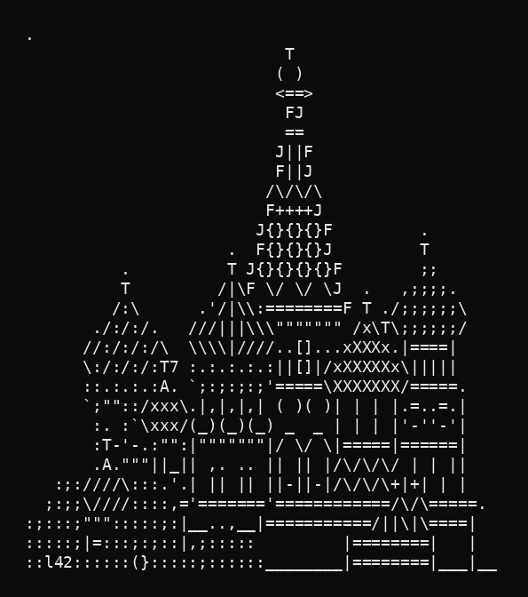

Chapter 1: Saint Basil's Cathedral in Three Semantic Forms
This is the first stable snapshot of gemini_manifold: one ASCII cathedral, one rasterized image of that ASCII,
and one fused image+text object. It is a tiny experiment, but it already shows a path toward teaching language
models to communicate through ASCII art as structure, image, and multimodal meaning.
Objects3
Embedding Modelgemini-embedding-2-preview
Vector Size3072
Why this matters
We are not treating ASCII as a novelty layer pasted on top of language. We are treating it as a genuine medium of thought.
The same cathedral can exist as pure text, as a rendered image, or as a fused multimodal artifact. The distances between
those forms tell us what the model thinks is preserved and what changes when expression crosses modality boundaries.
The Source Artifact

Snapshot
Three points in one shared space
Click any two points to compare them.
Observed Distances
What moved closer to what
Pair
Cosine
L2
Interpretation
Chapter note
The fused image+text object sits closer to the image than the pure text object does, but it still carries enough
of the ASCII structure to remain recognizably linked to both. That is exactly the kind of bridge we want if the long-term goal
is to teach models to speak in ASCII not just decoratively, but coherently.